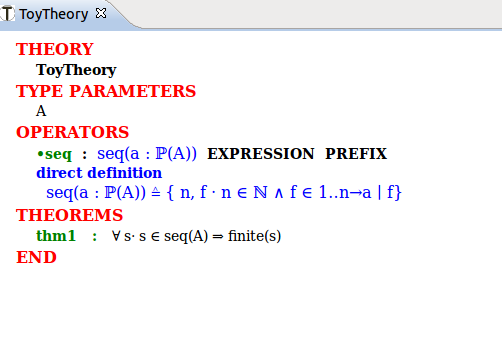

| Theory Plug-in User Manual |
| Theory Plug-in User Manual |
A polymorphic theorem is no different, in principle, from theorems defined in contexts and machines. The Theory plug-in, however, provides facilities to instantiate and use these theorems in proofs. See the example below.
The previous theorem articulates the fact the sequences as specified in our example are finite. As with theorems in contexts and machines, you have to prove validity and well-definedness of the theorem. The proof obligations associated with a theorem are the following:
./S-THM the validity proof obligation.
./WD-THM the well-definedness proof obligation.
So far, the pretty print of our theory produces the following:

| Theory Plug-in User Manual |